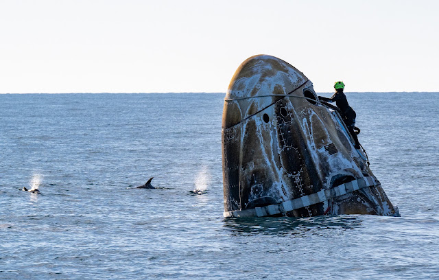

क्रू-12 वापसी: 8 महीने बाद समंदर में उतरे 4 अंतरिक्ष यात्री

समंदर में उतरे ड्रैगन यान के पास बचाव दल का सदस्य — नासा की स्प्लैशडाउन तस्वीर (प्रतीकात्मक छवि)।
8 महीने के अंतरिक्ष प्रवास के बाद स्पेसएक्स का क्रू-12 अभियान आज धरती पर लौट आया है। ड्रैगन यान 'फ्रीडम' आज रात 9:04 बजे (भारतीय समय) कैलिफोर्निया तट के पास प्रशांत महासागर में उतरा। यान में चार अंतरिक्ष यात्री सवार थे — नासा की कमांडर जेसिका मीर और पायलट जैक हैथवे, यूरोपीय अंतरिक्ष एजेंसी की सोफी एडेनॉट और रूस के आंद्रे फेद्यायेव।
7 अक्टूबर की शाम 5:35 बजे (भारतीय समय) यान अंतरराष्ट्रीय अंतरिक्ष स्टेशन के हार्मनी हिस्से से अलग हुआ था। इसके बाद इसने धरती के चक्कर लगाते हुए 27 घंटे से ज़्यादा समय अंतरिक्ष में बिताया। वापसी से पहले यान के रॉकेट इंजन चलाए गए (डीऑर्बिट बर्न), जिससे धरती की ओर लौटने का रास्ता तय हुआ। समंदर में उतरते ही बचाव दल की नावों ने यान को घेर लिया और चारों यात्रियों को सुरक्षित बाहर निकाला गया। नासा ने इस पूरी वापसी का सीधा प्रसारण भी दिखाया।
इन 8 महीनों — पूरे 237 दिनों — में कर्मीदल ने सैकड़ों विज्ञान प्रयोग किए। जेसिका मीर और सोफी एडेनॉट ने 4 बार अंतरिक्ष में चहलकदमी (स्पेसवॉक) भी की; सोफी एडेनॉट अंतरिक्ष में चहलकदमी करने वाली फ्रांस की पहली महिला बनीं। नासा अब इन प्रयोगों के नतीजों का विस्तृत ब्योरा जारी करेगा।
📝 परीक्षा टिप: क्रू-12 — स्पेसएक्स ड्रैगन 'फ्रीडम', 2026, 4 सदस्य (जेसिका मीर, जैक हैथवे, सोफी एडेनॉट, आंद्रे फेद्यायेव), 8 अक्टूबर 2026 को रात 9:04 बजे (IST) कैलिफोर्निया तट के पास प्रशांत महासागर में वापसी।
स्रोत: नासा